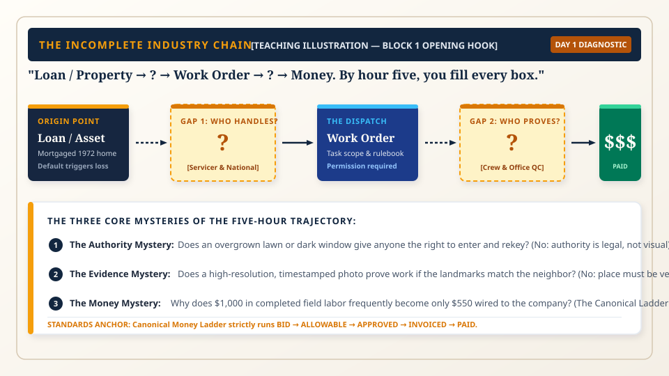
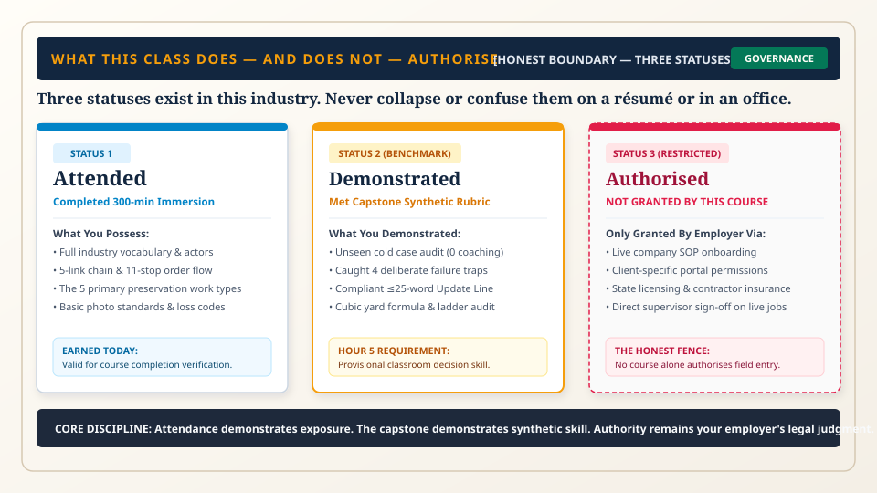
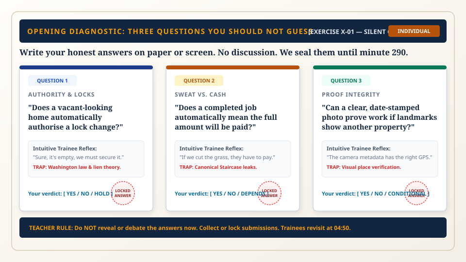
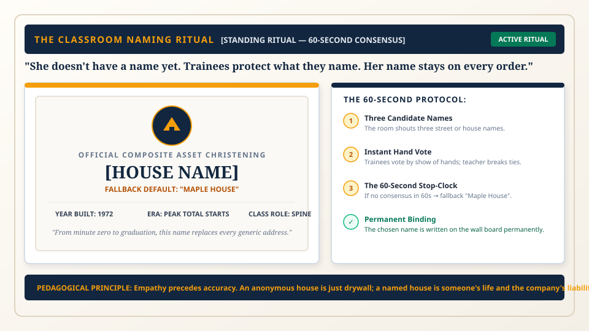
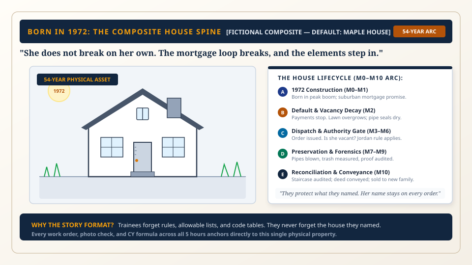

Five Hours. One House. The Whole Chain.
Welcome to the front line of mortgage default servicing. In exactly 300 minutes (280 active minutes plus two 10-minute breaks), you will accomplish something few people outside senior management ever grasp:
Notice the chain on the screen right now. It is deliberately broken:
Loan / Property → [ ? ] → Work Order → [ ? ] → Money
A mortgage company in New York or Charlotte owns a financial lien on a house in Ohio or Texas. The lawn is three feet high, water pipes are threatening to burst in sub-zero frost, and the back door is unlatched.
The gap between the money and the physical dirt is your job. By minute 300, you will confidently fill every single missing box.

What This Class Does — and Does Not — Authorise.
We practice radical transparency from minute two. This course delivers deep industry literacy and your first demonstrated decision skill. It does not make you operationally independent or grant you the unilateral right to enter property.
Three distinct operational statuses exist in this industry. They are never blended:

Three Questions You Should Not Guess.
Before we teach you any rules, you must record your initial baseline instincts. Most industry novices get all three of these questions completely wrong because real-world preservation law contradicts common intuition.
Select your commitment for each prompt. When you lock your answers, they are stashed for your Block 12 graduation debrief.
1. Does a vacant-looking home automatically authorise a lock change?
2. Does a completed job automatically mean the full amount will be paid?
3. Can a clear, date-stamped photo prove work if its landmarks show another house?

She Doesn't Have a Name Yet: The Naming Ritual.
Throughout these 5 hours, you will not bounce across dozens of disconnected, random example properties. Instead, our entire curriculum anchors to one single fictional composite house born in 1972.
Her story is the story of American housing: built during the post-war boom, mortgaged, lived in for decades, defaulted during economic shock, emptied, preserved by field crews, audited by office coordinators, and ultimately sold to a new young family.
The class shouts three names and takes an immediate hand vote. If consensus is not reached within 60 seconds, the official fallback is automatically ratified.
Once named, her name is never debated again. Whenever you inspect a photo, write a 25-word update line, or calculate debris volume, you are safeguarding her.

Born in 1972: The Story of a House.
Our composite house was built in 1972 — the single largest TOTAL housing starts year in United States history (2,379,000 starts, combining 1,309,000 single-family and 1,070,000 multifamily homes).
She stood through the high-inflation payment shocks of 1981 when mortgage rates touched 18.63%. She stood through the subprime credit bubble of 2005. She was soundly built: Douglas fir 2x4 framing, copper domestic supply lines, asphalt shingle roofing, and poured concrete footings.
A layoff occurs. An adjustable-rate mortgage resets. Illness strikes. The family misses payment 1 (30 days delinquent), payment 2 (60 days), payment 3 (90 days). After the required 120-day loss mitigation window, the file moves into the legal foreclosure road.
When the family packs their remaining belongings and drives away, the house stands alone. Nobody is being paid to care for her yet. And that is when vacancy decay strikes.

Vacancy Is Damage. Nobody Has to Break a Window.
Trainees often assume that empty houses stay in the condition they were left in. In truth, vacancy itself is active deterioration:
- Week 1 (Visual Signals): The front lawn overgrows beyond municipal code limits (6–10 inches). Mail accumulates in the box. Circular flyers pile on the porch. Every neighbor and passerby now knows the property is empty.
- Weeks 2–4 (Moisture Infiltration): A sudden cold snap freezes water trapped in uninsulated copper supply elbows. The metal splits. When daytime temperatures warm, pressurized water gushes through the walls.
- Month 2 (Environmental Hazard): Warm standing moisture fuels microbial growth. Toxic mold climbs the drywall, infesting studs and HVAC ductwork.
- Month 3+ (Vandalism & Blight): Scrappers force the rear door, stripping copper piping and the central AC condenser. The property becomes a neighborhood hazard and town code violation.
The Five Core Physical Preservations You Will Master:
Three Separate States. Never Collapse Them.
If you remember only one cognitive rule from this orientation, let it be this: you must maintain three completely separate judgments at all times:
NEVER collapse these three into one sentence!
A home can appear completely vacant yet the company lacks legal authority to change the lock. A job can be physically finished in the backyard yet the work order remains legally unpayable because the wide photo is missing.
The Golden Classroom Rule Card:
Proof always."
If authority is uncertain → HOLD.
If a photo gap exists → SEND BACK TO FIELD.
Never paper over a gap.
The Foundation Is Set. The Story Begins.
You have now completed Module 0 (Course Orientation & The Honest Boundary). You have established:
- The 300-minute curriculum trajectory and promise.
- The Three Statuses (Attended, Demonstrated, Authorised) and the honest operational boundary.
- Your locked baseline instincts on the three diagnostic dilemmas.
- The christening of Maple House, born in 1972.
- The separation of Property State, Legal Authority, and Work-Order State.
We travel back to 1945: how war factories converted to suburban tracts, how the GI Bill and FHA shaped the 30-year mortgage, the stark exclusion filter of redlining, and the two historical building peaks of 1972 and 2005.
Ready to Advance?
Review any drawer materials above if you need clarity on definitions or boundaries. When ready, click next or proceed to Module 1.